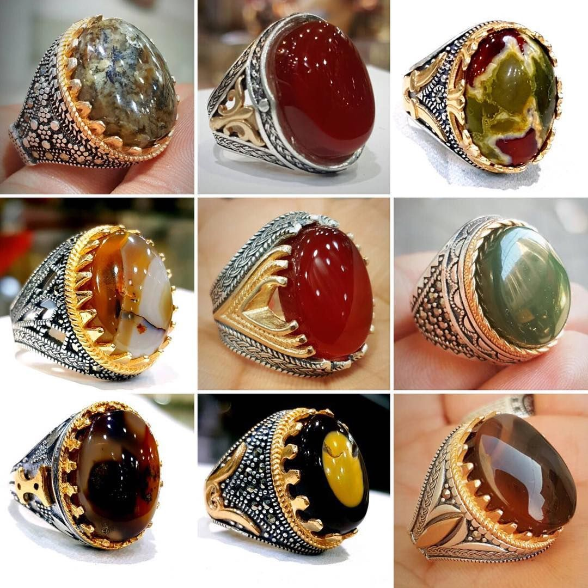
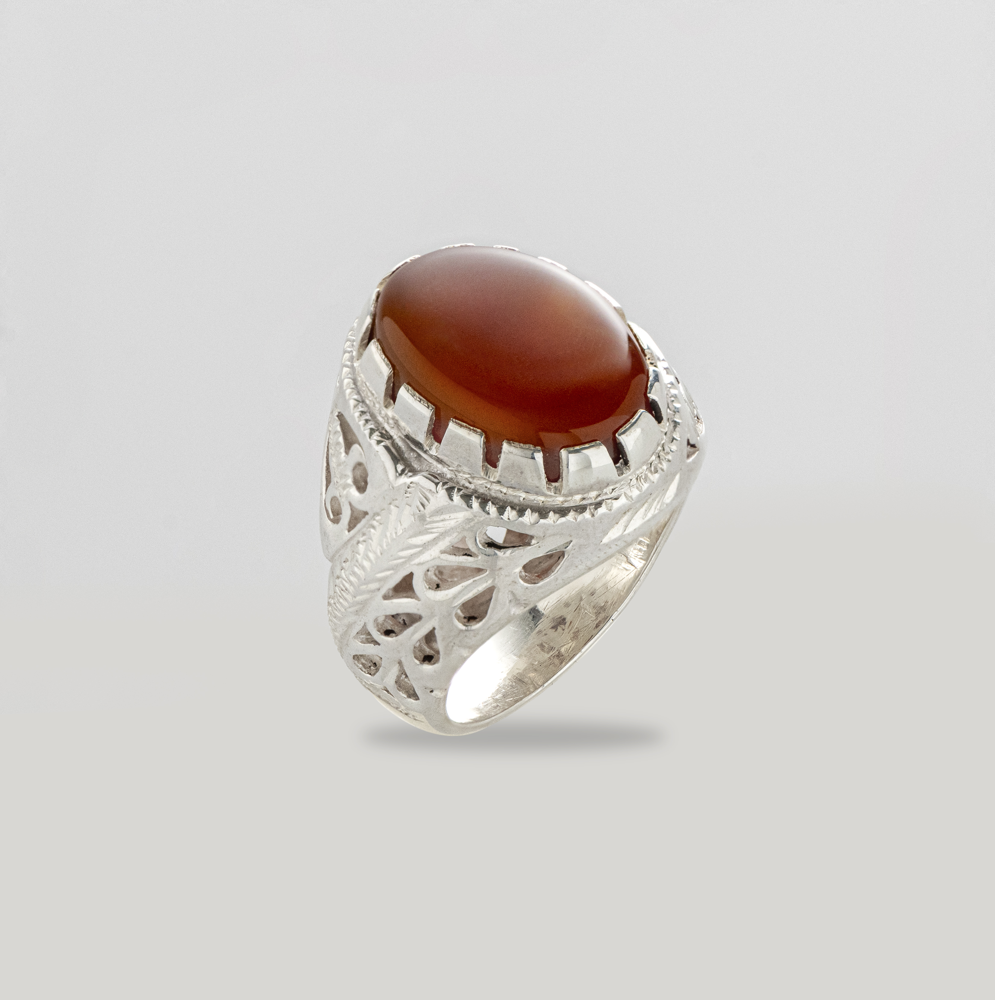

اكتشف سحر العقيق اليماني الأصيل
تعمق في عالم الأحجار الكريمة النادرة وتعرف على تاريخها العريق وجمالها الفريد.
ابدأ رحلتك في عالم الأحجار الكريمة
امتلك قطعة من التاريخ والجمال. اختر عقيقك اليماني الخاص الآن.
تصفح المعرضآخر التحديثات والإصدارات
وصلت حديثًا: مجموعة فاخرة من العقيق المصور
التاريخ: 01 يونيو 2025 | القسم: عقيق مصور
قطعة فريدة: عقيق دموي نادر بوزن 20 قيراط
التاريخ: 28 مايو 2025 | القسم: عقيق دموي
مقالات ومدونة

كيف تميز العقيق اليماني الأصيل من المقلد؟
02 يونيو 2025

رحلة استخراج العقيق: من الجبل إلى الحجر الكريم
29 مايو 2025